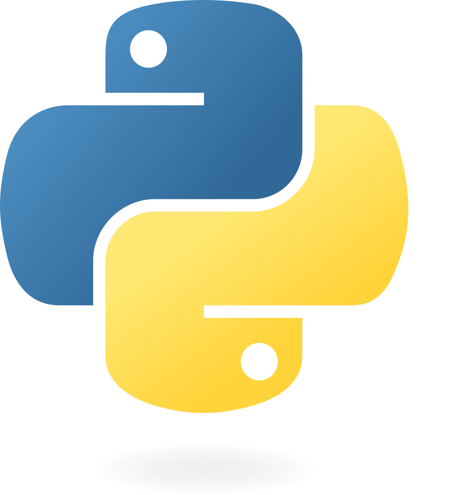

Compétences
Langages de programmation maîtrisés

HTML

CSS

Python
Technologie en cours d'apprentissage ou de notion connue

React

Cisco

Blender
Outils bureautiques
Suite Office (Word, Excel, PowerPoint)
Étudiant en BTS SIO - Option SLAM
Le BTS SIO (Services Informatiques aux Organisations) est une formation de niveau Bac+2 qui forme des professionnels de l’informatique capables d’administrer des réseaux et de développer des solutions logicielles. Il permet aux étudiants d'acquérir des compétences techniques et une compréhension approfondie des systèmes informatiques utilisés en entreprise.
Les étudiants ont le choix entre deux spécialités :
HTML
CSS

Python
React
Cisco
Blender
Suite Office (Word, Excel, PowerPoint)
Durant ma formation en BTS SIO option SLAM, j’ai réalisé plusieurs projets dans le cadre des Ateliers Professionnels (AP). Ces projets avaient pour objectif de développer des compétences en développement web, gestion d’état d’application et conception logicielle.
SIO Chat est une application web de messagerie permettant à plusieurs utilisateurs connectés sur le même réseau d’échanger des messages en temps réel. L’application est hébergée localement sur la machine et permet d’envoyer des messages visibles par tous les utilisateurs connectés.
React
Framework JavaScript pour l’interface
Tailwind CSS
Framework CSS utilitaire
DaisyUI
Composants UI pour Tailwind
GSH Social est une application web inspirée du fonctionnement des réseaux sociaux comme Reddit. Elle permet aux utilisateurs de publier des messages ou des images sous forme de posts visibles par les autres utilisateurs connectés à l’application.
Vue.js
Framework JavaScript
Pinia
Gestion d’état de l’application
Tailwind CSS
Framework CSS
DaisyUI
Composants d’interface
Je travaille actuellement sur un projet de client lourd développé en Java. Ce projet vise à développer un logiciel pour voir les vélibs sur l'île de France
Java
Développement du client lourd
Pour toute question ou demande d'information, vous pouvez me contacter via les moyens suivants :